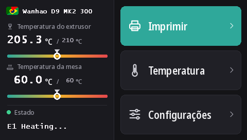

Gravar a tela touch da Duplicator 9
Todas as D9, da MK1 à MK3, têm a mesma tela touch DWIN T5 (480 × 272). Com estes firmwares ela usa o DGUS Reloaded 2.0, a nossa nova interface em 16 idiomas, gravada a partir de um cartão microSD.
Baixar DWIN_SET.zip (DGUS Reloaded 2.0)
O que o DGUS Reloaded 2.0 traz
- 16 idiomas: English, Français, Deutsch, Español, Italiano, Português, Nederlands, Polski, Türkçe, Русский, العربية, हिन्दी, 中文, 日本語, 한국어, Bahasa Indonesia. Toque na bandeira ao lado do nome da impressora na tela inicial para trocar; a impressora lembra da escolha.
- Uma página do sensor de filamento: Configurações → Filamento → Sensor de filamento. Veja Sensor de filamento.
- Uma linha de status que fica: a última mensagem, Ready por exemplo, continua na tela em vez de sumir depois de 30 segundos.
- Medidores de temperatura para o bico e a mesa, com a temperatura alvo marcada.
- Um visual novo em todas as páginas: tema escuro, botões maiores, pictogramas nas janelas pop-up.

1. Formatar o cartão microSD
- Windows: o Windows 11 muitas vezes não formata em FAT32; use o GUIFormat com o tamanho da unidade de alocação em 4096.
- Linux:
sudo mkfs.fat -F 32 -s 8 /dev/sdX1(confira antes o dispositivo comlsblk). - macOS:
sudo newfs_msdos -F 32 -c 8 /dev/diskN(confira comdiskutil list).
2. Copiar os arquivos
Descompacte o DWIN_SET.zip e copie a pasta DWIN_SET inteira para a raiz do cartão.
3. Gravar
- Desligue a impressora e tire-a da tomada.
- Abra a frente da base para chegar à parte de trás da tela, onde fica o slot microSD dela.
- Coloque o cartão e ligue. A tela mostra a atualização em 10 a 30 segundos; espere até ela reiniciar normalmente, de 1 a 3 minutos no total.
- Desligue, tire o cartão e feche a base.
O vídeo da Wanhao de atualização da tela da D9 mostra onde fica o slot.
De onde ela vem
O DGUS Reloaded 2.0 redesenha página por página o DGUS Reloaded 1.0.3 (de Desuuuu, e depois Neo2003). O código-fonte, o programa que gera os arquivos da tela e as traduções estão no GitHub. Alguma palavra errada ou estranha no seu idioma? Avise a gente no Discord ou abra uma issue lá.
Para voltar ao DGUS Reloaded 1.0.3, por exemplo com um firmware anterior à v2.0.9, grave o DWIN_SET_1.0.3.zip do mesmo jeito.
Voltar à tela da Wanhao
O firmware da tela da Wanhao só funciona com o firmware da placa-mãe da Wanhao. MK1: o arquivo da tela da versão correspondente na página da MK1. MK1 + kit, MK2 e MK3: DWIN_SET_MK2.zip. Mesmo procedimento.